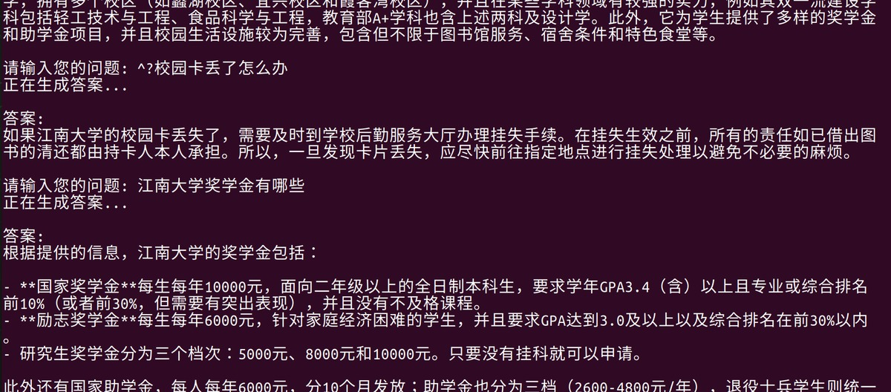
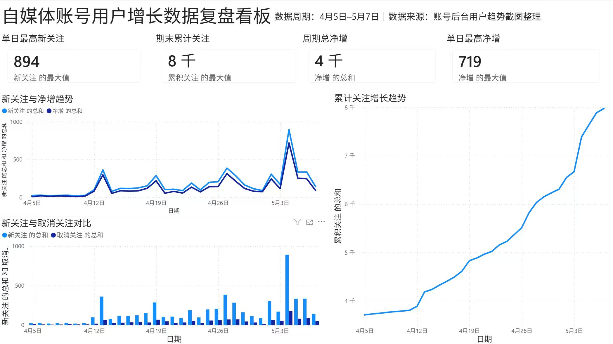
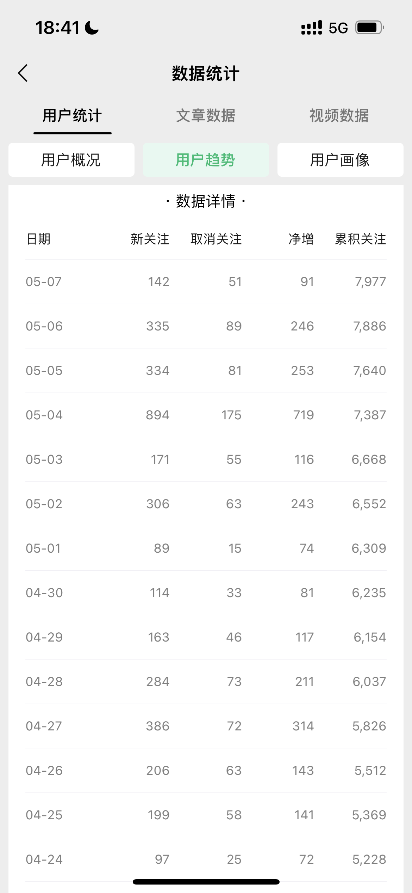
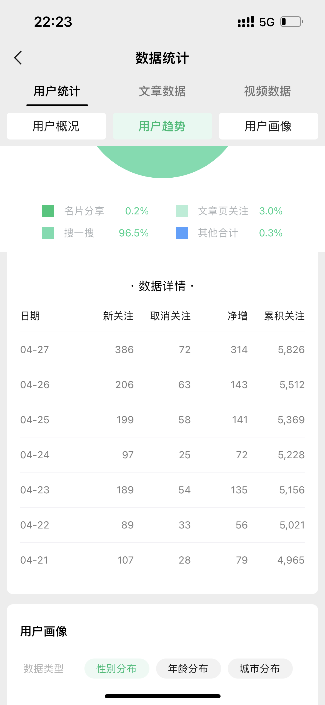
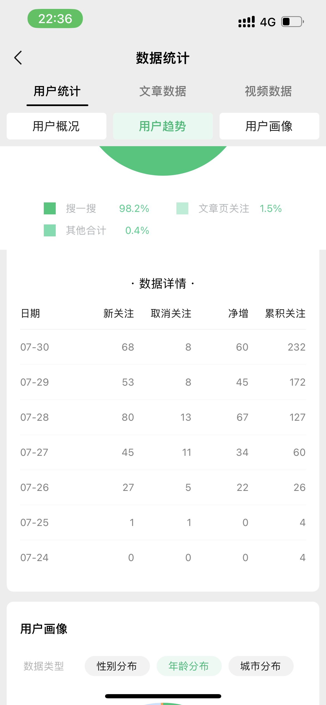

我是牛菲，目前就读于江南大学计算机科学与技术专业。相比只做单点执行，我更喜欢把复杂问题拆成“用户是谁、场景是什么、链路哪里断、数据如何验证、方案怎样落地”。
在得物技术部实习期间，我参与 B 端商家侧问题排查与 AI 技术支持机器人优化，围绕账户、支付、结算、金融等业务域整理真实工单中的错误回答、信息缺失和边界问题，协助研发完善业务侧 Skill。
此前我也独立做过自媒体私域增长项目，负责内容投放、渠道合作、SOP 沉淀与数据复盘，并用 Excel / Power BI 搭建数据跟踪体系。
计算机背景加真实运营场景经历，目标方向为 AI 产品运营、产品经理助理、ToB 产品与知识库运营相关岗位。
我是牛菲，目前就读于江南大学计算机科学与技术专业。相比只做单点执行，我更喜欢把复杂问题拆成“用户是谁、场景是什么、链路哪里断、数据如何验证、方案怎样落地”。
在得物技术部实习期间，我参与 B 端商家侧问题排查与 AI 技术支持机器人优化，围绕账户、支付、结算、金融等业务域整理真实工单中的错误回答、信息缺失和边界问题，协助研发完善业务侧 Skill。
此前我也独立做过自媒体私域增长项目，负责内容投放、渠道合作、SOP 沉淀与数据复盘，并用 Excel / Power BI 搭建数据跟踪体系。
以下内容来自实习、个人商业化项目与课程项目，重点呈现与 AI 产品运营岗位相关的业务理解、数据驱动和产品落地能力。

从后台截图取数，到 Excel / Power BI 复盘，再到合作排期与 SOP 沉淀，展示的是一套可复用的增长运营方法。




我更适合投递“AI 产品运营 / 产品经理助理 / ToB 产品 / 知识库运营”这类需要业务理解、数据分析和技术沟通的岗位。
用户调研、需求分析、功能拆解、流程梳理、SOP 沉淀、内容策划、渠道投放、增长复盘。
LLM、RAG、Prompt Engineering、向量检索、知识库问答、AI Agent 趋势关注与业务场景落地。
Python、Java、SQL、C/C++、Linux、Excel、Power BI；具备从数据中发现问题并验证策略的基础。
PDF 中整理了岗位匹配、项目拆解、数据证据和可复用方法论，更适合在网申附件或面试前发送。
作品集聚焦 AI 产品运营与 B 端产品方向，突出工单洞察、数据口径、AI 工具落地、用户增长和跨团队协作。
建议投递时同时上传 PDF 附件，并把本页面作为 GitHub Pages 个人展示链接填写在“作品链接 / 个人主页 / 项目经历展示”一栏。
下载 PDF